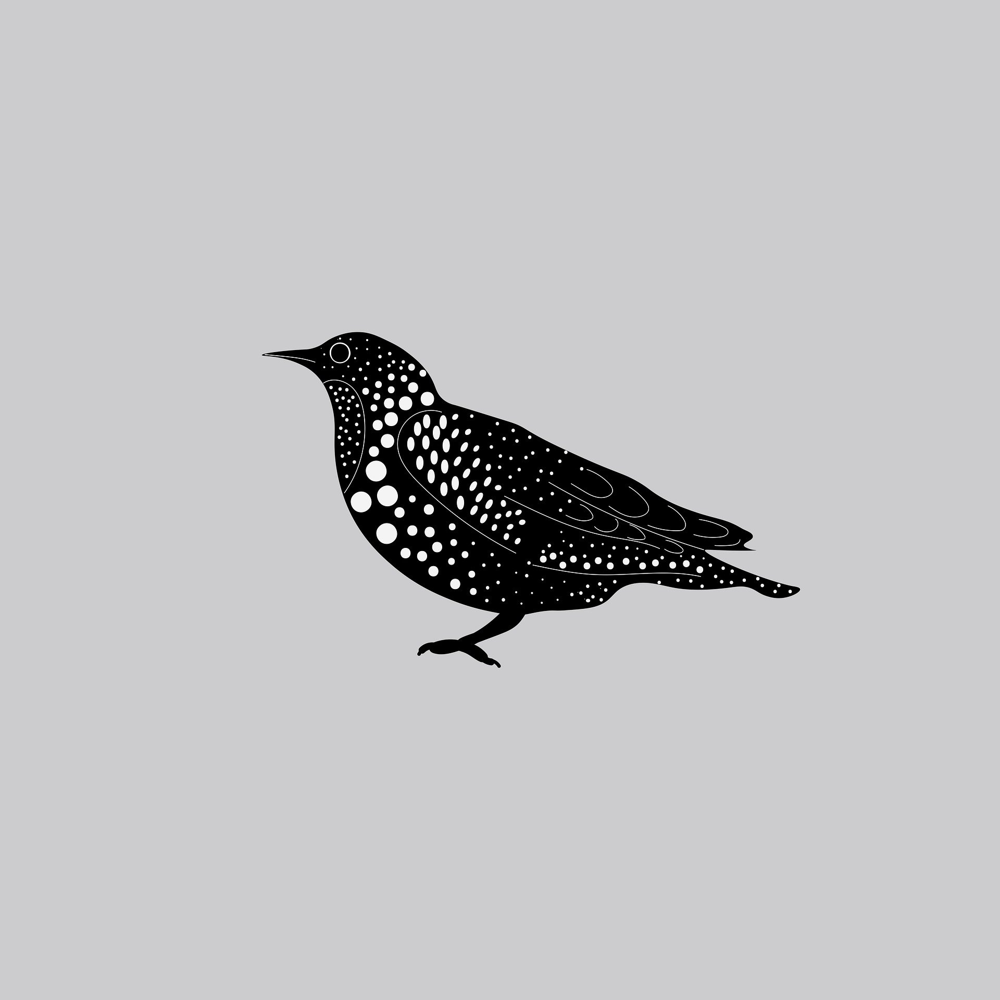

<!-- eslint-disable @angular-eslint/template/eqeqeq -->

<ion-header [translucent]="true" style="z-index: 0;">
</ion-header>
<ion-content>
    <div id="sendclass" class="sendclass animate__animated animate__fadeIn animate__delay-1s">

        <div class="header-background">
        </div>


        <div class="hello">
            <div class="name-header">
                <div class="backto" onclick="window.history.go(-1);" style="margin-top: 0; font-size: 1.2rem; color: white; margin-bottom: .5rem;">
                    <i class="fas fa-chevron-left"></i>
                </div>
                <h2 class="sub2" style="color: white;">¿Qué haremos hoy?</h2>

            </div>

        </div>


        <section class="standard">
            <div class="eventos" style="background-color: white;">
                
                <form 
                    class="cameras"
                    autocomplete="off" 
                    [formGroup]="MediaForm" 
                    (ngSubmit)="sendReport()">
                    
                    <div class="desc-report">

                        
                        <p>Genera tu archivo media<br><span></span></p>
                        <div class="date-event">
                            <span class="second">AUDIO - tool </span>
                        </div>

                    </div>

                    <label>Al envíar tu archivo se almacena temporalmente en la base de datos local</label>

                    <input style="font-family: 'Montserrat'" type="text" class="form-control" placeholder="Nota..." formControlName="reference" name="reference">
                    <br>        

                    
                    <input type="file" hidden>
                    <div class="desc-report-second record">

                        <p style="margin-bottom: 0;">Grabar Audio</p>
                        

                    </div>

                    <div class="footerSlides">
                    
                        <button disabled class="btn btn-primary"><i class="fas fa-check"></i>&nbsp;TERMINAR</button>
                    </div>
                </form>


                <div class="separator-bottom"></div>
            </div>
        </section>

    </div>


    <div id="succok" class="succok align-items-center d-flex justify-content-center min-vh-100" style="width: 100%; margin-top:50%;">

        <div class="element-succ ">

            <div class="parrafo" style="width: 85%; text-align: center;">
                <h5 class="title-parrafo">¡El reporte ha sido creado!</h5>
                <p class="desc-parrafo">Muchas gracias por tu cooperación.</p>
            </div>
        </div>
    </div>


</ion-content>
